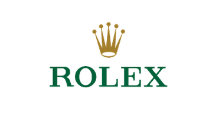
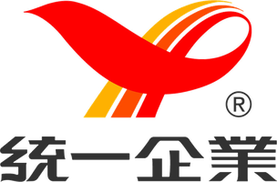

肆拾文創成立於 2024 年 10 月。我們從尚未成形、資訊複雜或需要被細膩整理的需求中，找出真正值得傳達的核心，再轉化為文字、視覺與影像。服務涵蓋品牌內容與在地化、平台內容與投放、KOL／KOC 合作，以及商業影像與人物故事影片。
一線國際品牌經驗。


核心成員於前一任職期間參與執行的品牌專案
核心成員累積超過 15 年經驗，橫跨指標性媒體與數位平台。我們同時理解品牌規範、受眾閱讀習慣與平台內容邏輯，所以內容不只做得出來，還會被看完。
理解年度節奏、內部流程與決策考量。
出身媒體編輯台，以編輯的標準判斷內容值不值得被讀完。
知道內容在什麼結構下才會被看見。
不是接到 brief 就開始做，而是先判斷這次該說什麼、用什麼順序說，才會有人看完。
核心成員出身指標性媒體的編輯台與業務端，習慣以編輯的標準決定一則內容值不值得被讀完。
處理品牌敘事、人物訪談與長文企劃時，這讓我們抓得到真正的重點，而不是把資料排整齊。
熟悉微信公眾號、小紅書、TikTok 與 LINE 各自的閱讀節奏、版面限制與演算法邏輯。
同一個訊息在不同平台要用不同方式說，我們知道差別在哪裡，也知道哪些規範不能動。
整合內容梳理與影像製作資源，涵蓋需求釐清、創意發想、人物訪談、腳本企劃，到拍攝、剪輯與後期。專案初期即釐清製作目的、溝通對象與敘事核心。
確保敘事核心不在製作過程中被稀釋
將品牌價值轉化為具故事性、情感溫度與視覺質感的作品